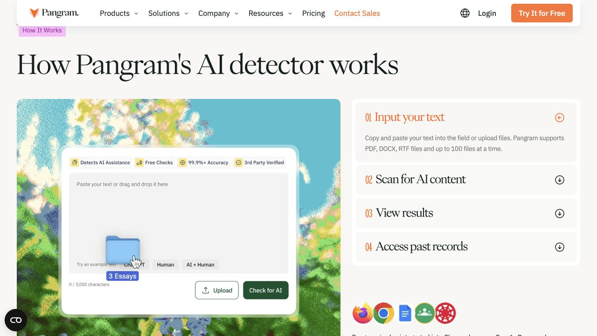

[Description de cet axe : activités proposées et modalités d’accompagnement.]
[Visuel de l’axe 01]
APADER / Proposition de section
Clique sur un axe pour ouvrir sa description et afficher son visuel. Les axes 4 et 5 sont des emplacements de simulation.
Du besoin à l’action
[Description de cet axe : activités proposées et modalités d’accompagnement.]
Axe 1 sur 3 : Agroécologie et pratiques durables
Disposition reprise : image à gauche et liste à droite ; ouverture au clic et changement du visuel. Textes et images en wireframe.

Pangram — page d’accueil ↗